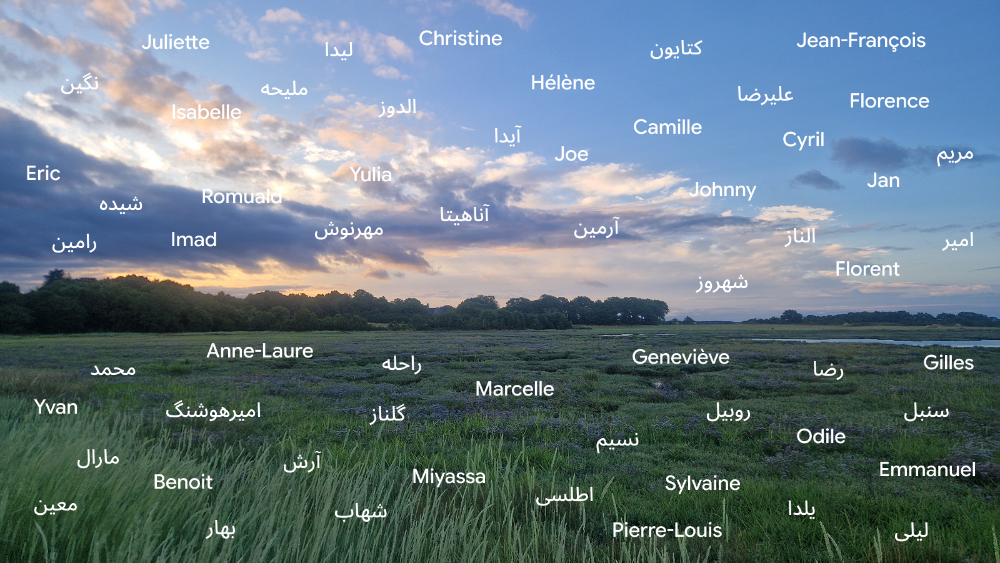

The Iranian people are exhausted. Despite their extraordinary courage and legendary generosity, life has become a battle for survival. Cut off from the world, with no internet access since February 28, 2026. Denied a decent life, crushed by runaway inflation. Denied medical care, under a regime that abandons its own people. Denied support, with fathers imprisoned and mothers murdered. Denied freedom for far too long.
Their struggle moves me to take on a challenge beyond my own limits: running 70 kilometres, starting in the depth of the night.
May the finish line and the sunrise symbolise the end of the long night the Iranian people are enduring.
Join me in this journey. Your donations can make a difference.
Ultra Marin – Le Réveil des Ducs (The Awakening of the Dukes)Le peuple iranien est épuisé. Malgré son courage inouï et sa générosité légendaire, la vie est devenue une bataille pour la survie. Privés de communication, sans accès à Internet depuis le 28 février 2026. Privés d'une vie décente, conséquence d'une inflation galopante. Privés de soins médicaux, face à un régime qui abandonne son peuple. Privés de soutien, avec des pères emprisonnés et des mères assassinées. Privés de liberté depuis trop longtemps.
Cette lutte m'inspire à relever un défi au-delà de mes propres limites : courir 70 km, en partant au cœur de la nuit.
Puissent la ligne d'arrivée et le lever du soleil symboliser la fin de l'obscurité que les Iraniens endurent.
Rejoignez-moi dans ce périple. Vos dons peuvent faire la différence.
Ultra Marin – Le Réveil des Ducs
After a week of scorching heat and fragile health, I stood on the start line of Ultramarin – Le Réveil des Ducs on June 27, 2026.
What a joy it was to run through the depths of the night! What a delight to catch the first rays of the sun and be lulled by the birdsong! And then came the finish line: 70 km in 10 h 05 min 40 s.
In the night of my homeland, one day the sun will rise thanks to all the extraordinary people who have never stopped fighting and hoping.
I am humbled by all your kind messages. By the heartfelt words you left with your bank transfers. Some of you placed your trust in a complete stranger. Some of you chose very specific donation amounts, which I'm sure held a special meaning. Some of you donated twice so that we reach our goal of €/$ 5,000.
This project has become far more than a fundraising campaign. It has been a remarkable human adventure.
From the bottom of my heart, thank you.
One day, we will raise funds to rebuild a free Iran. Until that day, vive la fraternité.
July 2026Après une semaine de canicule et une santé vacillante, j’ai pris le départ de l’Ultramarin – Le Réveil des Ducs le 27 juin 2026.
Quel plaisir de courir dans la nuit profonde ! Quelle joie d’apercevoir les premiers rayons du soleil et d’être bercée par le chant des oiseaux ! Et puis vint la ligne d’arrivée : 70 km en 10 h 05 min 40 s.
Dans la nuit de mon pays, un jour le soleil se lèvera grâce à tous les êtres magnifiques qui n’ont jamais cessé de se battre et d’espérer.
Je suis profondément touchée par tous vos messages bienveillants. Par les mots chaleureux que vous avez laissés en accompagnement de vos virements. Certains d’entre vous ont accordé leur confiance à une parfaite inconnue. Certains ont choisi des montants de dons bien précis qui, j’en suis sûre, avaient une signification particulière. Certains ont même donné deux fois pour atteindre notre objectif de 5,000 €/$.
Ce projet a été bien plus qu’une collecte de fonds. Il est devenu une formidable aventure humaine.
Du fond du cœur, merci.
Un jour, nous lèverons des fonds pour reconstruire un Iran libre. En attendant ce jour, vive la fraternité.
Juillet 2026Your contributions will help provide: